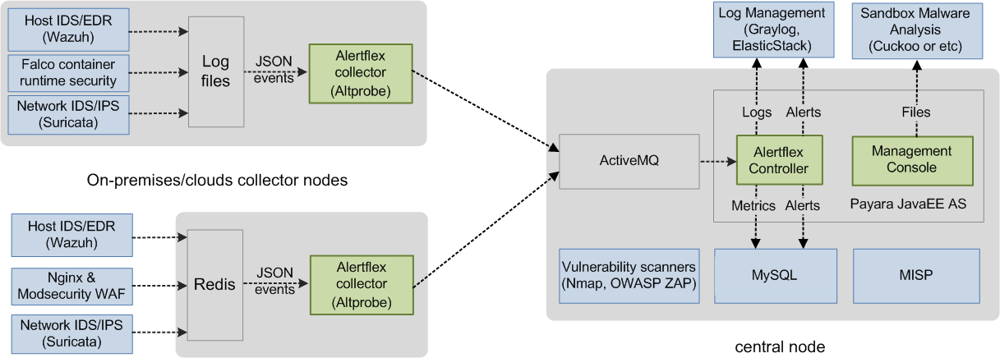
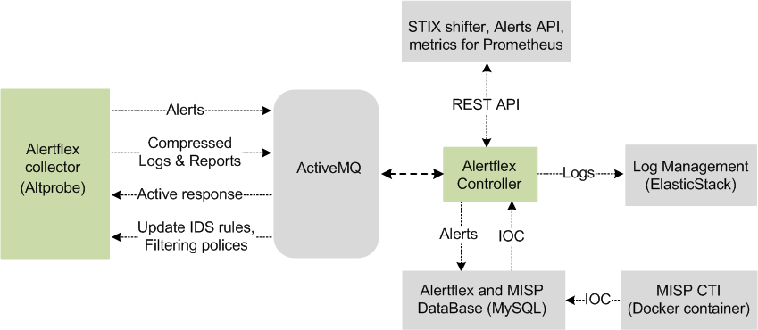
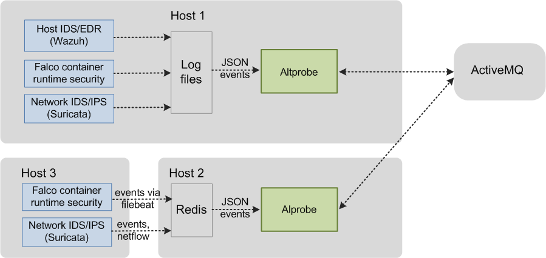

Architecture¶
High-level design¶
Alertflex project is a continuous security monitoring solution designed for use in Hybrid Clouds (on-premises and cloud-based IT infrastructure).
By monitoring events near real-time from well-known open-source security applications, Alertflex gives companies end-to-end security visibility,
implements EDR, CTI and SOAR technology stack.
Low-level design¶
The Alertflex is based on five levels of security event management technology: Collection, Streaming, Analysis, Storage, Access. For working in a distributed environment of Hybrid Clouds, the solution consists of separate software components Collector, Controller, Management Console. Collector (Altprobe) is placed in the network domain where security sensors are installed (Container Runtime Security, Host IDS, File Integrity Monitor, Network IDS, Web Application Firewall). Together with security sensors, Collector logically forms the Collector node. Alertflex Controller and Management Console make up the central node. The central node could be placed inside of monitored IT infrastructure or outside. To exchange messages between the Collector node and the Central node, the ActiveMQ or Amazon MQ message broker is used. The security of connections between nodes is implemented on the basis of support for SSL / TLS protocols built into ActiveMQ. The solution can be easily scaled from the stand-alone appliance configuration to the distributed configuration for multi-clouds.
Central node¶
The minimum configuration of the central node includes Alertflex Java EE applications (Controller, Management console) which work under Payara/GlassFish AS and third-party open-source components ActiveMQ, Redis, MySQL. It can be installed on the stand-alone server or virtual machine with Linux Centos 7 or Ubuntu 16.04 version. The high availability of the central node is based on cluster configurations of third-party components and microservices architecture Alertflex applications. Below a drawing of such a High availability scheme:
Collector node¶
Collector node is based on the micro-segmentation model. It can include several alertflex collectors (Altprobe) and security sensors/IDS. The minimum configuration of such a node includes one installed collector on a computer/virtual machine (Master) in the node segment. The configuration can be expanded by installation several Alertflex collectors on different computers/VM inside of the node segment. It allows connecting many security sensors inside one network segment controlled by the node and using a single network and agents namespace. Alertflex collector can directly read security events from IDS logs or use Redis server for receiving events from IDS which are installed on other hosts. See an example of such configuration below:
